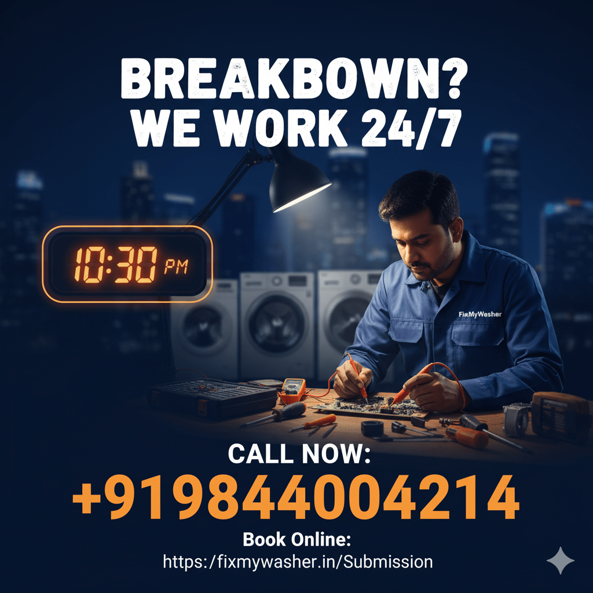
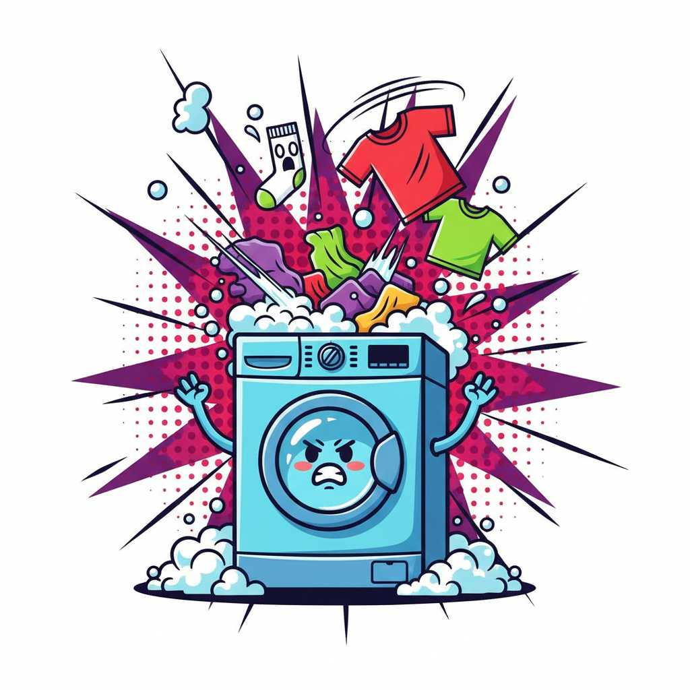
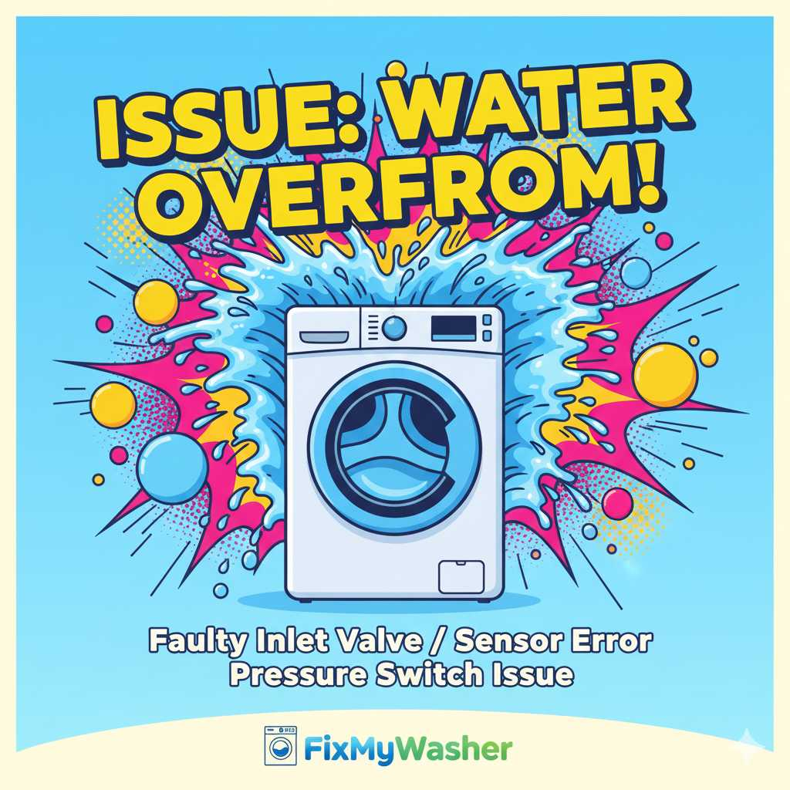
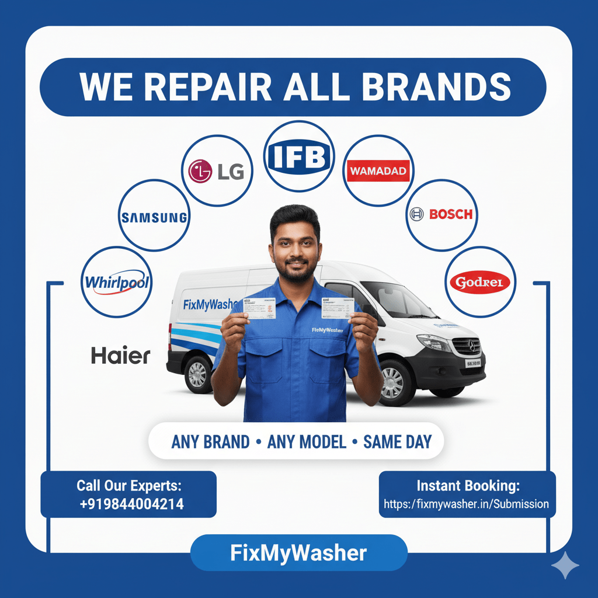

LG Washing Machine Repair in Bangalore — Direct Drive Motor & LE Error Specialists
LG is arguably the most misunderstood brand to repair in Bangalore, precisely because its biggest selling point — the Direct Drive motor, marketed with a headline-grabbing long motor warranty — leads a lot of owners to assume the machine simply doesn't fail. It does, just differently than belt-driven machines do. Instead of a worn belt or a slipped pulley, LG faults tend to show up as motor bearing wear, hall sensor drift, or the infamous LE "Locked Motor" code. FixMyWasher's technicians are specifically trained on Direct Drive diagnostics, LG's LE/OE/UE error system, and the Smart ThinQ app's built-in diagnostic feature that most repair services never even ask customers to use.

LG Machine Showing LE, OE or UE Right Now?
Tell us the exact code on the phone and we'll bring the matching part on the first visit.
Call 9164151568LG Error Codes We Diagnose and Fix
LG's display panel is one of the most informative in the industry once you know how to read it correctly. Here are the codes our technicians see most often on Bangalore service calls, and what genuinely causes each one — not just the generic manual explanation.

LE — Locked Motor
- Drum genuinely jammed by an overloaded or bunched load, the most common cause by far
- Foreign object (coin, wire, garment part) obstructing the drum rotation
- Failing hall sensor giving a false "not rotating" reading to the control board
- Actual Direct Drive motor or bearing seizure — less common but the costliest to fix
OE — Drain Fault
- Clogged drain pump filter, our single most common LG service call
- Kinked or crushed outlet hose behind the machine
- Worn drain pump motor on machines past 5 years
- Hair, coins or lint jammed in the pump impeller
UE — Unbalanced Load
- Genuine load imbalance from heavy items bunching to one side
- Worn shock absorber no longer correcting minor imbalance
- Machine not levelled correctly, common in older Bangalore flooring
- Suspension spring fatigue on units over 6 years old
IE — Water Inlet Fault
- Water inlet valve solenoid clogged with mineral sediment
- Low mains water pressure not meeting fill-time threshold
- Inlet hose filter mesh blocked with debris
- Common after municipal water supply interruptions
Direct Drive vs Belt-Driven Motors: What It Actually Means for Repair
LG's Direct Drive design connects the motor shaft straight to the drum with no belt or pulley in between, which is a genuinely different mechanical architecture from Bosch's EcoSilence, Haier's basic inverter motor, or the belt-and-gearbox systems on Godrej and IFB semi-automatics. This isn't marketing fluff — it removes an entire category of common washing machine failure. But it also means when something does go wrong, the fix usually involves the motor assembly itself rather than a cheap, five-minute belt swap.
| Aspect | LG Direct Drive | Belt-Driven (Bosch, IFB, etc.) |
|---|---|---|
| Belt wear or slippage | Not possible — no belt exists | Common failure point, cheap to replace |
| Motor connection | Direct to drum shaft | Via belt and pulley |
| Typical failure mode | Motor bearing wear, hall sensor drift | Belt snap, pulley wear |
| Repair cost when it fails | Higher — motor/bearing kit | Lower — belt replacement |
| Noise & vibration | Generally quieter when healthy | Can develop belt squeal over time |
Using LG's Smart ThinQ App Before You Call Us
Newer LG models with Smart ThinQ connectivity include a built-in Smart Diagnosis feature that most owners never use: holding your phone's microphone against a specific spot on the machine while it emits a diagnostic tone lets the app read internal fault codes directly, sometimes catching issues before they trigger a visible error on the display. If your model supports this, running Smart Diagnosis before calling us and sharing the result speeds up our visit significantly, since we arrive already knowing which component to check first rather than starting diagnosis from zero.
LG Model Range We Service
LG's Bangalore lineup is almost entirely built around Direct Drive technology, but the segment and feature set changes what fails and how often.

Front Load with 6Motion
- Six distinct drum motion patterns controlled by the Direct Drive motor's precision
- TurboWash high-pressure jets can clog with sediment in hard-water areas
- Door seal and drum bearing wear typical after 5–6 years
- LG's flagship category and the majority of our service calls
Fully Automatic Top Load
- Direct Drive fitted on most mid-to-premium top-load models too
- Simpler overall layout than front load, generally faster to repair
- Water level sensor faults are the most frequent call here
Smart ThinQ Connected Models
- WiFi module occasionally needs a reset rather than a hardware fix
- Built-in Smart Diagnosis feature speeds up on-site fault-finding
- Same core Direct Drive mechanics as non-connected models
Older Direct Drive Models (6+ Years)
- Motor bearing replacement becomes the most common major repair at this age
- Hall sensor drift can mimic a motor fault — correct diagnosis avoids overpaying
- Genuine LG bearing kits remain widely available through our supplier network
Why Bangalore's Hard Water Attacks the Direct Drive Bearing Specifically
Because the Direct Drive motor sits directly on the drum shaft with no belt to absorb vibration or wear independently, the bearing supporting that shaft carries the full mechanical load of every spin cycle. Bangalore's borewell-sourced hard water accelerates mineral deposit buildup around the drum seal and bearing housing faster than LG's warranty testing, conducted under more moderate average Indian water conditions, accounts for. We see Direct Drive bearing wear appearing meaningfully earlier — often years before the widely quoted 10-year motor life — in Sarjapur Road, Whitefield and Electronic City, where borewell dependency is highest. A seal and bearing housing check during any Direct Drive service call catches this early, before it progresses to a full motor replacement.
What You Can Check Yourself Before Calling Us
A few checks are genuinely worth doing before booking an LG repair visit. If you see LE, first try removing some of the load and running an empty spin cycle — this alone resolves a meaningful share of LE calls that turn out to be simple overloading rather than a motor fault. If you have a Smart ThinQ-connected model, run the app's Smart Diagnosis feature and note the result before calling. For OE drain errors, check the drain filter access panel at the bottom-front of the machine for visible debris first.
What we don't recommend attempting yourself: opening the Direct Drive motor housing, which involves careful drum-shaft alignment that's easy to get wrong and expensive to fix if you do, or replacing the hall sensor, which requires precise positioning relative to the motor's magnet ring. Both are quick jobs for a technician with the right tools and genuinely risky as a first-time DIY attempt.
LG Installation, Uninstallation & Relocation
Direct Drive machines are more sensitive to incorrect levelling than belt-driven units, since any base wobble transmits straight through the rigid motor-to-drum connection rather than being partially absorbed by belt flex. Our installation includes precise levelling using a spirit-level check, not just a visual estimate, along with the standard transit bolt removal and hose connection checks. For relocations, we secure the drum assembly carefully for transit, since Direct Drive drums are heavier than belt-driven equivalents and shift differently during a move if not properly braced.
Transit bolt removal & precision levelling
Inlet/outlet hose connection & leak testing
Direct Drive drum securing for transit
Electrical socket & earthing check
Smart ThinQ WiFi setup on connected models
First-wash test cycle before we leave
Is Your LG Fault Urgent, or Can It Wait?
A quick guide to help you decide whether to call today or schedule for later.
Call Us Today
- Water leaking from the base during a cycle
- Grinding or metallic noise from the motor area
- Machine trips the socket or house breaker
- Door won't unlock with laundry trapped inside
Can Be Scheduled
- Occasional LE that clears after reducing the load
- Slightly slower fill or drain than usual
- Minor rattling that hasn't gotten worse
- Smart ThinQ app showing a non-urgent diagnostic note
How LG Repair Works With Us
Book & Dispatch
Tell us the model and error code on the phone; a technician is assigned same day.
On-Site Diagnosis
Free inspection including hall sensor and bearing check, with a written quote.
Genuine Parts Repair
Only genuine or OEM-equivalent LG parts fitted — motors, bearing kits, sensors, PCBs.
Test & Warranty
Full wash cycle test before we leave, plus a 90-day warranty on parts and labour.
LG Repair Estimated Pricing
| Service | Estimated Range |
|---|---|
| Doorstep inspection & diagnosis | Free |
| Drain pump / filter clearance | ₹350 – ₹800 |
| Door lock / hall sensor replacement | ₹1,200 – ₹2,000 |
| Direct Drive bearing replacement | ₹2,200 – ₹3,600 |
| Direct Drive motor replacement | ₹3,800 – ₹5,200 |
Direct Drive motor and bearing repairs cost more than belt-driven equivalents by nature of the design, but happen less frequently. Exact cost depends on model and part availability, always confirmed in writing before repair begins.
Why Bangalore Trusts Us With LG Machines
Direct Drive Experts
Trained specifically on motor and bearing diagnostics, not just generic appliance repair
Same-Day Visit
Book before 2 PM for same-day service across Bangalore
90-Day Warranty
On both parts and labour for every LG repair we complete
Genuine Parts
No third-party substitutes on Direct Drive motors, bearings or sensors
Recent LG Repairs in Bangalore
Meera J., Indiranagar
"Our LG showed LE and stopped mid-cycle. Technician diagnosed a jammed drum, not the motor, and cleared it without replacing any parts — saved us a big unnecessary bill."
Arvind P., Sarjapur Road
"Direct Drive motor bearing had gone on our 6-year-old LG. They explained why it doesn't need a belt and had the exact bearing kit on hand, no waiting for parts."
We Also Repair These Brands in Bangalore
Related Services
LG Repair Coverage Across Bangalore
LG's Direct Drive range is one of the most widely owned in Bangalore, and our technician coverage reflects its broad presence across every part of the city. In Sarjapur Road, Whitefield and Electronic City, where borewell water hardness is highest, we see Direct Drive bearing wear appearing earlier than the brand's general warranty period would suggest, making these areas our highest-frequency zones for bearing kit replacements. In Indiranagar, Koramangala and HSR Layout — established residential areas with a strong LG ownership base — LE and OE codes dominate, often resolved without any part replacement once genuine drum obstruction or filter blockage is ruled out. Jayanagar and Marathahalli see a fairly even mix, reflecting the city-wide popularity of the brand across both older and newer households.

Extending Your LG Direct Drive Machine's Life Between Services
A few habits noticeably reduce how often a Direct Drive LG needs a repair call. Never force a jammed drum by hand or with tools — this is the fastest way to trigger a false LE and potentially damage the hall sensor in the process; call a technician instead. Distribute loads evenly and avoid consistently overloading the drum, since Direct Drive motors, without a belt to absorb minor stress, transmit imbalance load directly into the bearing over time. If you're on borewell water in Sarjapur Road, Whitefield or Electronic City, ask your technician to check the drum seal and bearing housing during any service visit, even one unrelated to spinning, since early mineral buildup here is silent until it isn't. Run the machine's tub-clean cycle monthly to keep the drum and door seal free of residue that can affect the door lock's ability to sense a proper close.
LG Washing Machine Repair FAQs
What does the LE error code mean on my LG washing machine?
LE stands for Locked Motor and is LG's most well-known error code. It usually means the Direct Drive motor's rotation sensor detected the drum wasn't turning as expected, which can be caused by an overloaded drum, an obstruction jamming the drum, or in less common cases, an actual motor or bearing fault.
Does LG's Direct Drive motor really not need repair for 10 years?
LG's long motor warranty covers manufacturing defects in the motor itself, not general wear, water damage, or bearing failure caused by hard water and heavy use. We do see Direct Drive motors and their bearings needing service well before 10 years, particularly in hard-water areas of Bangalore.
What is the difference between LG's Direct Drive and a belt-driven motor?
Direct Drive connects the motor directly to the drum shaft with no belt or pulley in between, eliminating belt wear and slippage entirely. The trade-off is that when something does go wrong, it's usually the motor, its bearing, or the hall sensor rather than a simple, cheap belt replacement.
Do you use genuine LG spare parts?
Yes, every repair uses genuine or OEM-equivalent LG parts including Direct Drive motors, bearing kits, drain pumps and PCBs, backed by a 90-day warranty.
How fast can a technician reach me in Bangalore for LG repair?
Typically within 90 minutes across Bangalore, including Indiranagar, Koramangala, Sarjapur Road, Whitefield, HSR Layout and Jayanagar.
Can I use the Smart ThinQ app to diagnose my LG machine myself?
Yes, if your model supports Smart Diagnosis, holding your phone against the machine while it emits a diagnostic tone lets the app read internal fault codes. Sharing that result with us before your visit speeds up our on-site diagnosis significantly.
Is a Direct Drive motor replacement worth it on an older LG machine?
In most cases yes, especially on machines under 7 years old, since the drum, PCB and other major components typically remain in good condition and a motor or bearing kit replacement is far cheaper than a new machine.
Get Your LG Washing Machine Fixed Today
Free diagnosis, genuine Direct Drive parts, and a 90-day warranty — on every LG repair across Bangalore.